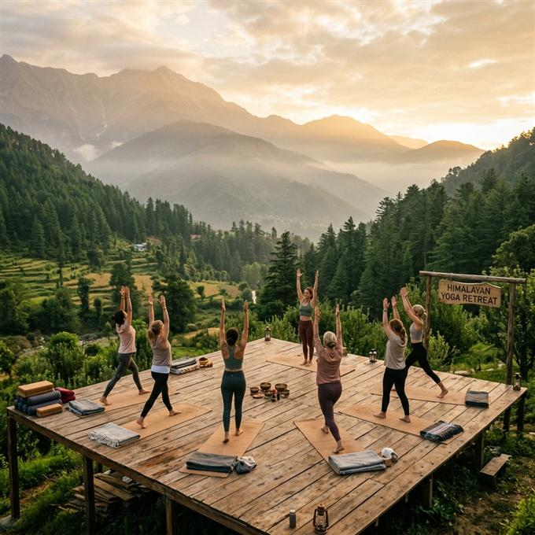

RestorativeThe Awakening Journey
₹27,990
all-inclusive • 4N / 5D
Burnout reset for seekers with zero joint complaints
- Day 1 Vaidya Review: Pulse assessment & personalized trajectory on arrival
- Morning Decoctions & Shatkarma: Warm herbal kadha & gentle nasal cleansing
- Yoga & Organic Satvik Meals: Daily morning yoga, fresh breakfast, lunch & dinner
- 1 Prescribed Bahya Basti: Warm herbal oil pool for neck and back pain relief*
- Tactile Pottery Workshop: Grounding clay session shaping local Himalayan ceramics
- Bonfire & Post-Dinner Music: Fireside gathering & soothing acoustic melodies after dinner
- Review Session: Closing review & personalized home lifestyle plan